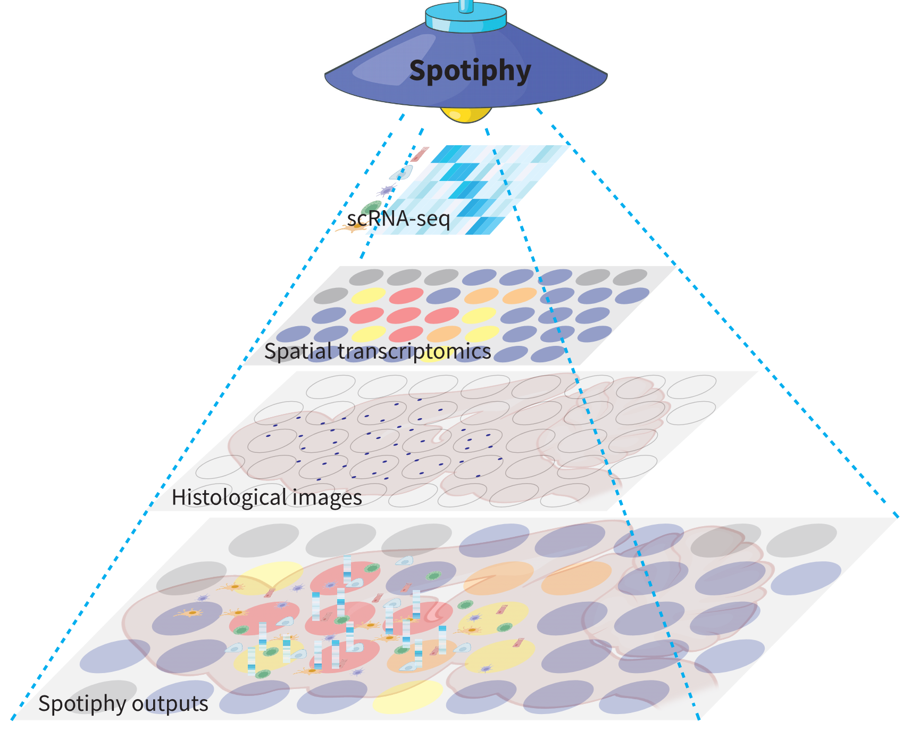

Spotiphy!


Spotiphy is a Python-based pipeline designed to enhance our understanding of biological tissues by integrating sequencing-based spatial transcriptomics data, scRNA-seq data, and high-resolution histological images. Employing a probabilistic model, Bayesian inference, and advanced image processing techniques, Spotiphy primarily executes three key tasks:
Deconvolution: Spotiphy estimates the abundance of each cell type in each capture area of spatial tissue.
Decomposition: Spotiphy decomposes spatial transcriptomics data to the single-cell level.
Pseudo single-cell resolution image: Spotiphy generates a pseudo single-cell resolution image to reconstruct cell neighbors.
With these outputs, Spotiphy facilitates numerous downstream analyses. For more detailed information, please refer to the associated research paper.
